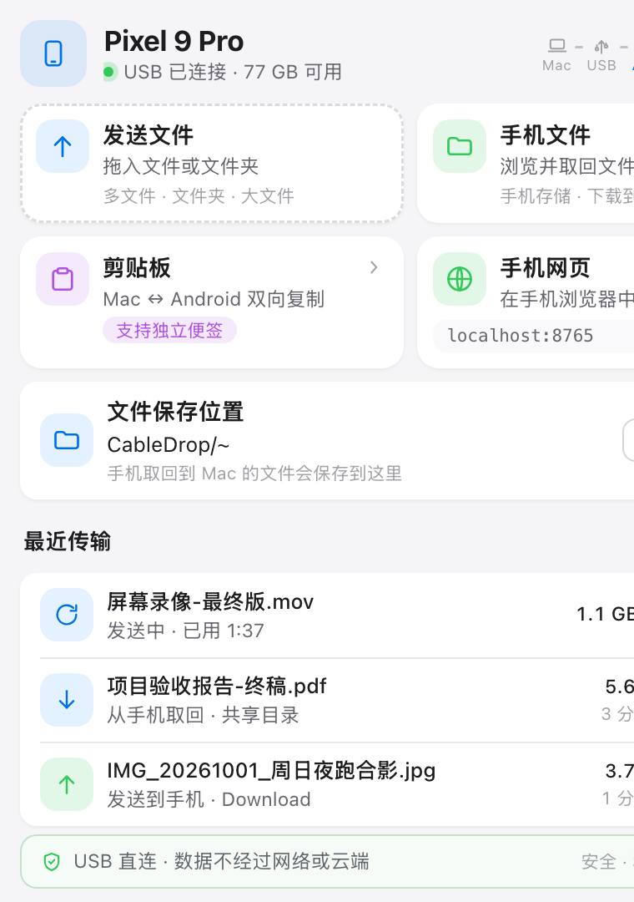
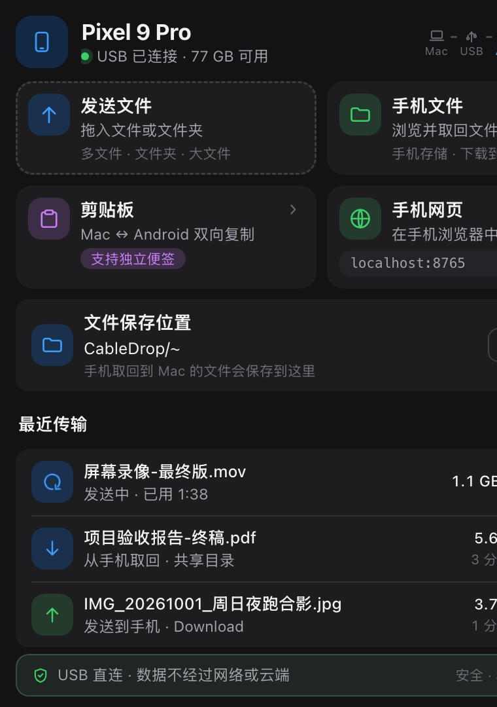
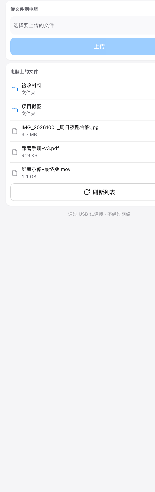
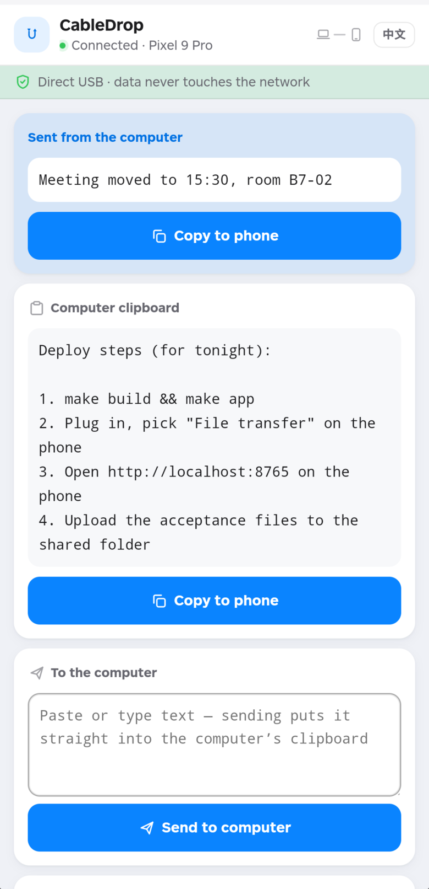

Files, both directions
Drag onto the panel or pick files to send. Browse the phone's storage and pull anything back.
USB direct · nothing in the middle
No network. No cloud. Nothing to install on the phone. Plug the cable in, open a page on the phone, and both directions work.
MIT licensed · macOS 12+, Windows 10+, Linux (GTK3) · Android 7+

Drag onto the panel or pick files to send. Browse the phone's storage and pull anything back.
Copy on the computer, tap to copy on the phone. Paste on the phone, it lands on the computer. A separate note slot never clobbers what you're using.
Byte-weighted percentage for multi-file batches, elapsed time where adb gives no stream progress, a real percentage for phone uploads.
The desktop panel and the phone page share the same colour tokens, radii and type scale — one stylesheet's worth of design decisions, applied to a 380×540 window and a 390×844 screen.


One Go binary. The cable is the whole transport.
127.0.0.1 only. No firewall prompt, nothing on the LAN.go:embed — no npm, no build step.adb shell: Android 10+ forbids writing the device clipboard over adb, and localhost is a secure context, so the browser Clipboard API works there.adb track-devices connection — no process forking while idle.Drop files or whole folders on the panel; pushes land in the phone's Download folder. Pulls land in the shared folder on the computer.
Both directions, including a dedicated note slot so sending text never overwrites the clipboard you're working from.
The shared folder on the computer is a real file browser on the phone — subfolders, sizes, downloads included.
Byte-weighted percentages, elapsed time when adb offers nothing, and failures reported in words rather than error codes.
Not connected, connecting, cable in the wrong USB mode, adb missing, tunnel failed — each says what to do next.
A ~845 KB WebView shell for when you want it to feel installed: real file picking, downloads into the Downloads app, a reconnect screen.
Both surfaces follow prefers-color-scheme. It is a media query, not a setting.
macOS, Windows and Linux from one tree. Windows cross-compiles from a Mac; the Linux build needs GTK3 and WebKitGTK 4.1.
Everything above works in the phone's own browser — nothing to install. The APK is a small WebView shell around the very same page, for when you would rather tap an icon than a bookmark. It bundles no server of its own: plug the cable in exactly as before.

INTERNET alone, used only by the loopback tunnelmake apk → dist/CableDrop.apkEvery byte goes over the USB connection. No account, no server, no telemetry beyond what your package manager already knows. Nothing is installed on the phone — you open a page.
brew install android-platform-tools), or drop the platform-tools folder next to the binary.
make app # CableDrop.app — a menu bar app, no Dock icon
open CableDrop.apphttp://localhost:8765 on the phone. That's the whole phone UI.
make build · make app · make windows · make linux · make apk